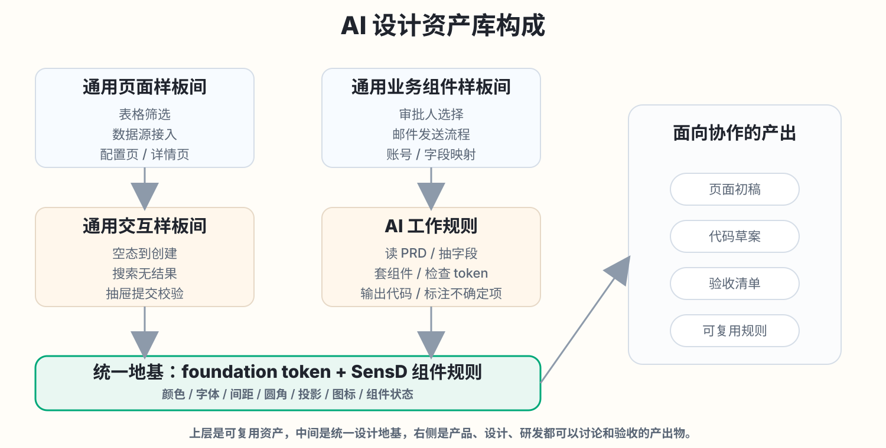
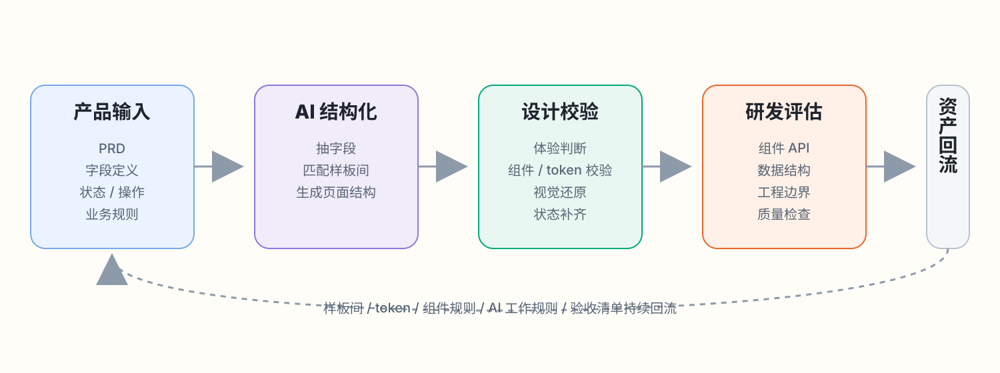

AI 辅助设计阶段与标准化业务组件探索
这篇内容不是在讲“AI 能不能替代谁”，而是在讲一个更实际的问题: 标准场景里，设计、产品、研发能不能更早看到同一个页面草稿，更快进入讨论。
这次我选了数据源接入作为验证场景，先做 TikTok 的设计还原，再进一步验证 Google Ads 这类同结构换字段的页面，能不能通过结构化描述继续生成。
这件事不是凭空来的，它对应的是我们设计环节里反复出现的真实问题。
先把日常协作里的原声摆出来，再去看为什么会选择这个方向做尝试。
“这种类型的需求又来了，但页面结构其实和之前差不多。”
“PRD 已经有了，能不能先给我一个大差不差的页面结构看看？”
“表格、筛选、空态、创建抽屉这些模块，每次都要重新搭一次。”
“如果只是视觉草稿，对我们价值有限；如果结构、字段、组件边界清楚，就更容易接着评估。”
“很多时间其实花在对齐间距、宽度、状态、组件细节，而不是页面本身。”
“来了一个新的标准数据源接入需求，可不可以先复用已有结构，不从零开始？”
把问题整理清楚之后，会发现有一批场景其实很适合先做 AI 辅助生成。
关键不是“全部自动化”，而是先找到重复性高、结构稳定、输入可描述的部分。
| 问题 | AI 可先介入的方式 |
|---|---|
| 标准页面反复搭建 | 先复用页面样板间，把表格、筛选、空态、抽屉这些结构快速拼成初稿。 |
| 设计与研发反复对齐还原细节 | 把 token、组件规则、状态用法前置到生成阶段，减少后面对齐成本。 |
| 同类需求结构很像，但每次重新开始 | 基于已有页面做“同结构换字段”，让 AI 先生成新草稿，再由人继续判断。 |
| 接一个新的标准数据源接入需求 | 从 PRD 抽取字段、状态、操作，映射到已沉淀的 DataSourceSpec 描述格式。 |
| 产品想先快速看方案 | 先生成一个可讨论的页面结构草稿，提前确认信息层级、流程和字段。 |
设计还原: 先基于 TikTok 数据源接入页面，验证 AI 能不能搭出可讨论的还原初稿。
这一步的重点不是“生成一个新页面”，而是先看 AI 能不能理解现有设计资产并按规则还原。
标准页面反复搭建
表格、筛选、空态、创建抽屉在多个业务里反复出现。
设计与研发还原对齐
间距、宽度、状态、组件细节经常需要反复确认。
同类结构重复开始
页面结构相似，但每次仍然容易从零搭起。
TikTok 还原效果
同结构换字段生成: 基于 TikTok 样板，验证 Google Ads 能不能继续生成。
这一步展示的不是完整产品方案，而是“同类需求能不能更快进入讨论”。
新的标准数据源接入
新接一个数据源，需要快速生成同类页面方案。
来了一个同类新需求
页面框架一致，变化主要在字段、表格列和表单项。
产品想先快速看方案
PRD 已有，但完整设计稿还没开始，先确认结构。
Google Ads 生成过程
结构化输入示例
这次尝试真正沉淀下来的，不只是两个页面，而是一批可继续复用的资产。
后面如果要继续扩大覆盖范围，核心不是多做几个 demo，而是把这些资产继续补厚。

这套产出不是只对设计有用，它对产品、设计、研发进入讨论的时机都更靠前。
产品
设计
研发
如果继续往下做，目标不是一步到位，而是逐步把 PRD 到页面草稿的协作链路走通。

产品需要配合
研发需要配合
接下来设计师真正要补的是规则、样板和验收，不只是再做几个页面。
| 方向 | 需要完成的内容 | 目的 |
|---|---|---|
| 基础样式资产 | 颜色、字体、间距、圆角、投影、分割线、图标。 | 让 AI 有稳定的视觉规则可引用。 |
| 组件规则 | 标题栏、抽屉、表格、表单、输入框、下拉、按钮、状态标签。 | 让 AI 知道每个组件如何使用，有哪些状态。 |
| 高频页面样板间 | 数据源接入、表格 + 筛选、表格 + 创建抽屉、配置页 / 详情页。 | 让同类需求可以基于已有结构生成。 |
| 高频业务组件 | 审批、邮件发送、账号映射、字段映射、任务配置。 | 减少业务流程类组件重复设计。 |
| AI 可读设计规则 | 如何读 PRD、如何选样板、如何套组件、如何检查 token、如何标注不确定项。 | 让 AI 的生成过程更可控、可验收。 |
| 验收标准 | 视觉还原、组件使用、token 使用、状态完整性、工程边界。 | 让生成结果可以被设计和研发共同检查。 |